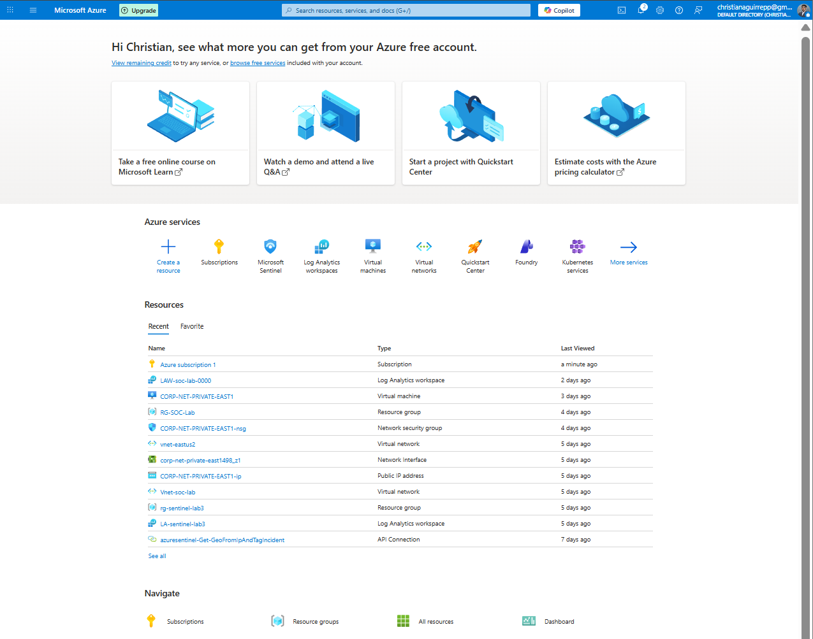
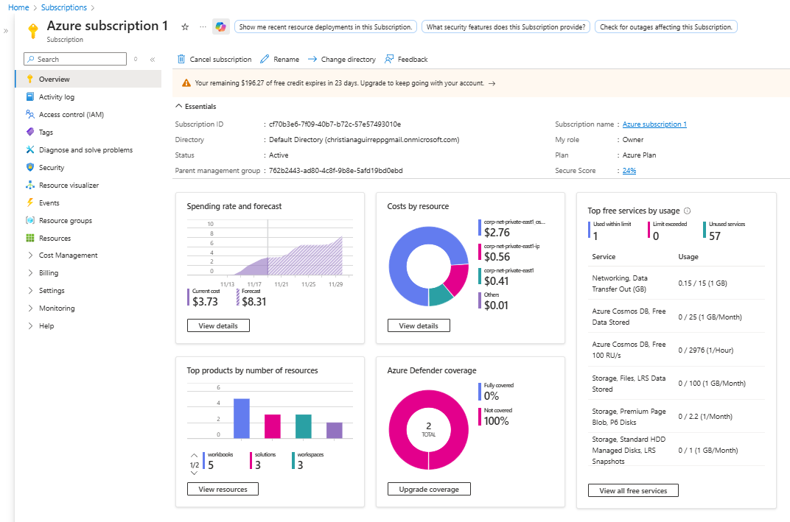
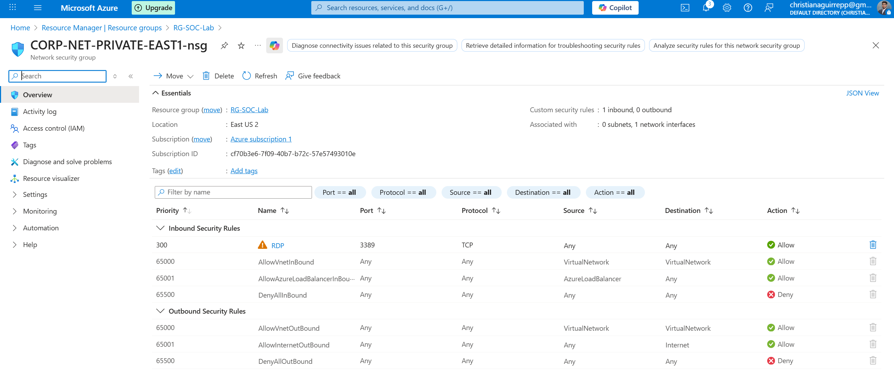
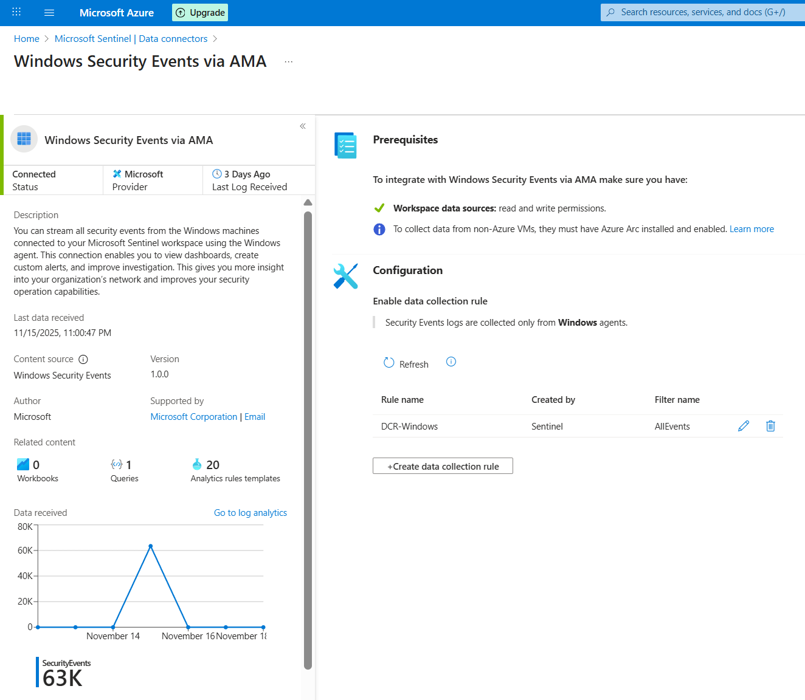
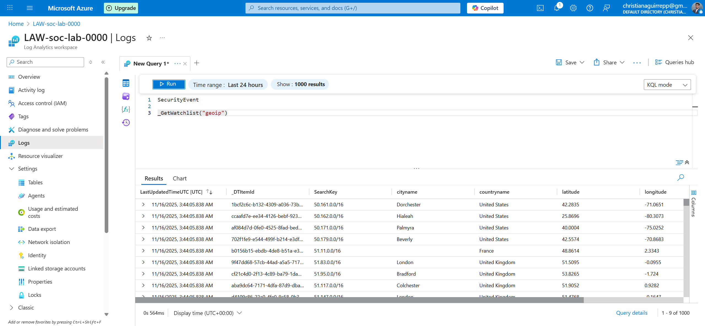
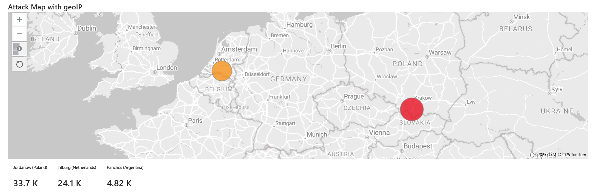

Azure SOC Honeypot & Attack Map Lab
Built a Windows honeypot in Azure, exposed it to real internet traffic, collected brute-force attacks, enriched attacker IPs using GeoIP watchlists, and visualized global activity in Microsoft Sentinel.
Project Narrative
I recreated a real SOC incident workflow by deploying a Windows honeypot VM, exposing its RDP port, collecting live SecurityEvent logs, enriching log data with GeoIP information, and converting raw telemetry into visual intelligence using Sentinel Workbooks.
What I Built
- Azure subscription & resource setup
- Windows 10 honeypot with public exposure
- NSG configured to allow all inbound traffic
- Windows firewall disabled for simulated vulnerability
- Log Analytics Workspace + Azure Monitor Agent
- Sentinel onboarding & SIEM pipeline
- GeoIP watchlist ingestion
- KQL enrichment using
ipv4_lookup - Global attack map Sentinel Workbook
Workflow Overview
Step 1
Azure Setup
Subscription, NSGs, Sentinel, LAW.
Step 2
Honeypot
Windows VM exposed with open inbound rules.
Step 3
Log Ingestion
SecurityEvent logs sent to LAW via AMA.
Step 4
GeoIP Enrichment
Watchlist + KQL join with attacker IPs.
Step 5
Attack Map
Workbook showing global attack sources.
Lab Breakdown
1. Azure Subscription Setup
Verified deployment access for VMs, NSGs, Log Analytics, and Microsoft Sentinel.

Azure Home Overview

Azure Subscription Overview
2. Honeypot VM & Intentional Exposure
Created a Windows 10 VM, enabled RDP, disabled firewall, and opened all inbound NSG rules.

NSG Rule: Allow All Inbound
3. Log Forwarding & Sentinel Integration
Logs ingested via Azure Monitor Agent into Log Analytics Workspace and surfaced in Sentinel.

AMA Connector: Windows Security Events
4. GeoIP Watchlist & KQL Enrichment
Imported a GeoIP dataset as a watchlist and joined it to SecurityEvent logs using KQL's ipv4_lookup.

Sentinel Watchlist: GeoIP Rows
5. Sentinel Workbook Attack Map
Built a global visualization showing attacker origin points from enriched 4625 events.

Global Attack Map Visualization
Sample KQL
Baseline Failed Logons
SecurityEvent
| where EventID == 4625
| sort by TimeGenerated desc
GeoIP-Enriched Events
let GeoIPDB = _GetWatchlist("geoip");
SecurityEvent
| where EventID == 4625
| evaluate ipv4_lookup(GeoIPDB, IpAddress, network)
Architecture Overview
Components
- Public Internet → attack traffic
- Azure NSG → exposed RDP perimeter
- Windows Honeypot VM → generates logs
- Azure Monitor Agent → forwards logs
- Log Analytics Workspace → central storage
- Microsoft Sentinel → detection & SIEM
Data Flow
- Internet → VM (brute-force attempts)
- VM → AMA → Log Analytics
- Log Analytics → Sentinel
- Watchlist → KQL enrichment
- Workbook → global visualization
Key Insights
- Exposed RDP servers attract attacks within minutes.
- Attacker infrastructure is mostly automated/cloud-hosted.
- GeoIP enrichment immediately reveals patterns and clusters.
- Workbooks convert raw logs into SOC-ready intelligence.
Skills Demonstrated
Summary
This project ties together endpoint logging, Azure monitoring, SIEM analysis, and threat enrichment into one workflow. The attack map visualizes real brute-force attempts in a way that both technical and non-technical audiences can understand, while showcasing core SOC skills.